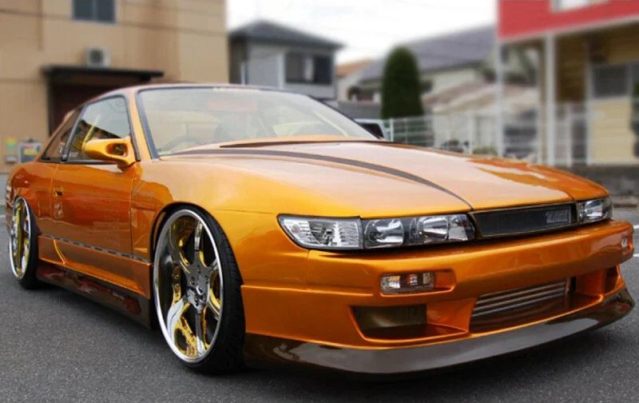
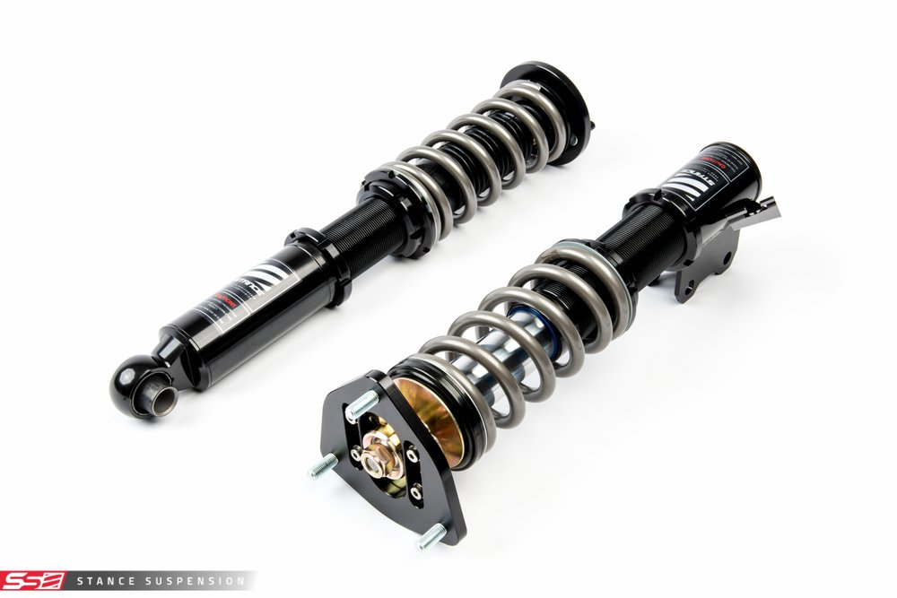
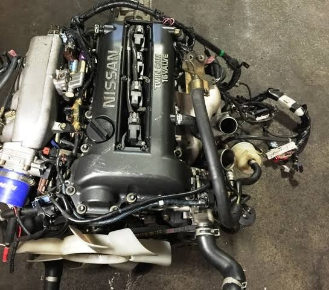
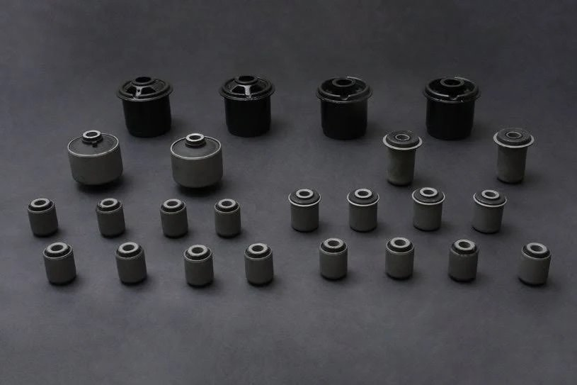

Build Log
 The starting point: 1992 Nissan 240SX.
The starting point: 1992 Nissan 240SX.

Planned: S13 Silvia front end conversion with the Origin Lab Stylish body kit (product photo).

Planned: Stance USA coilovers for adjustability, comfort, and reliability (product photo).

Planned: low-mileage S15 SR20DET with a Nismo 6-speed transmission (example photo).

Planned: Hardrace rubber bushing kits for the entire car (product photo).